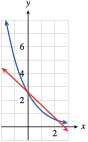
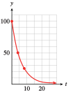

Exercises 6.6 Homework 4.5
¶For Problems 1-8, find an exponential function that has the given values.
1.
\(A(0) = 0.14\text{,}\) \(A(3) = 7\)
\(A(x) = 0.14(50)^{x/3}\)
2.
\(B(0) = 28\text{,}\) \(B(5) = 0.25\)
3.
\(f(7) = 12\text{,}\) \(f(8) = 9\)
\(f(x) = \dfrac{65,536}{729}\left(\dfrac{3}{4} \right)^x \)
4.
\(g(2) = 2.6\text{,}\) \(g(3) = 3.9 \)
5.
\(M(4) = 100\text{,}\) \(M(7) = 0.8\)
\(M(x) = 62,500(0.2)^x \)
6.
\(N(12) = 512,000\text{,}\) \(N(14) = 1,024,000 \)
7.
\(s(3.5) = 16.2\text{,}\) \(s(6) = 3936.6\)
\(s(x) = \dfrac{1}{135}(9)^x \)
8.
\(T(1.2) = 15\text{,}\) \(T(1.8) = 1.875 \)
For Problems 9-12, find a formula for the exponential function shown.


For Problems 13–18,
Fit a linear function to the points.
Fit an exponential function to the points.
Graph both functions in the same window.
13.
\((0, 2.6), ~(1, 1.3)\)
\(y= 2.6 -1.3x\)
\(y = 2.6(0.5)^x\)
- 
14.
\((0, 0.48), ~(1, 0.16)\)
15.
\((-6, 60), ~(-3, 12)\)
\(y= -36-16x \)
\(y = \dfrac{12}{5}(5)^{-x/3} \)
16.
\((2, 1.5), ~(4, 4.5)\)
17.
\((-2, 0.75), ~(4,6)\)
\(y= 2.5+0.875x \)
\(y = 1.5(2)^{x/2} \)

18.
\((-1, 0.5), ~(1,1)\)
19.
Nevada was the fastest growing state in the nation between \(1990\) and \(2000\text{,}\) with an annual growth rate of over \(5.2\%\text{.}\)
Write a function for the population of Nevada as a function of time. Let the initial population be \(P_0\text{.}\)
How long will it take for the population to double?
In \(1990\text{,}\) the population of Nevada was \(12\) hundred thousand. Graph your function in the window \(\text{Xmin} = 0\text{,}\) \(\text{Xmax} = 47\text{,}\) \(\text{Ymin} = 0\text{,}\) \(\text{Ymax} = 100\text{.}\)
Use intersect to verify that the population doubles from \(12\) to \(24\text{,}\) from \(24\) to \(48\text{,}\) and from \(48\) to \(96\) hundred thousand people in equal periods of time.
\(P = P_0(1.052)^t\text{;}\) \(t\) is the number of years since \(1990\text{.}\)
\(\dfrac{\log 2}{\log 1.052}\approx 13.7 \) years

20.
In 1986, the inflation rate in Bolivia was \(8000\%\) annually. The unit of currency in Bolivia is the boliviano.
Write a formula for the price of an item as a function of time. Let \(P_0\) be its initial price.
How long did it take for prices to double? Give both an exact value and a decimal approximation rounded to two decimal places.
Suppose \(P_0 = 5\) bolivianos. Graph your function in the window \(\text{Xmin} = 0\text{,}\) \(\text{Xmax} = 0.94\text{,}\) \(\text{Ymin} = 0\text{,}\) \(\text{Ymax} = 100\text{.}\)
Use intersect to verify that the price of the item doubles from \(5\) to \(10\) bolivianos, from \(10\) to \(20\text{,}\) and from \(20\) to \(40\) in equal periods of time.
21.
The gross domestic product (GDP) of the United Kingdom was \(1\) million pounds in the year \(2000\) and is growing at a rate of \(2.8\%\) per year. (The unit of currency in the U.K. is the pound, denoted by £.)
Write a formula for the GDP as a function of years since \(2000\text{.}\)
How long will it take for the GDP to grow to \(2\) million pounds? Give both an exact value and a decimal approximation rounded to two decimal places.
How long should it take for the GDP to \(4\) million pounds?
Using your answers to (b) and (c), make a rough sketch of the function.
\(GDP = 1.028^t\) million pounds
\(\dfrac{\log 2}{\log 1.028}\approx 25.1 \) years
\(50.2\) years

22.
The number of phishing Web sites (fraudulent Web sites designed to trick victims into revealing personal financial information) is growing by \(15\%\) each month. In June \(2005\text{,}\) there were \(4000\) phishing Web sites. (Source: www.itnews.com.au/newsstory)
Write a formula for the number of phishing Web sites as a function of months since June \(2005\text{.}\)
How long will it take for the number of sites to reach \(8000\text{?}\) Give both an exact value and a decimal approximation rounded to two decimal places.
How long should it take for the number of sites to reach \(16,000\text{?}\)
Using your answers to (b) and (c), make a rough sketch of the function.
23.
Radioactive potassium-42, which is used by cardiologists as a tracer, decays at a rate of \(5.4\%\) per hour.
Find the half-life of potassium-42.
How long will it take for three-fourths of the sample to decay? For seven-eighths of the sample?
Suppose you start with \(400\) milligrams of potassium-42. Using your answers to (a) and (b), make a rough sketch of the decay function.
\(\dfrac{\log 0.5}{\log 0.946}\approx 12.5 \) hours
\(25\) hours

24.
In October 2005, the Los Angeles Times published an article about efforts to save the endangered Channel Island foxes. "Their population declined by \(95\%\) to about \(120\) between \(1994\) and \(2000\text{,}\) according to the park service."
What was the fox population in \(1994\text{?}\)
Write a formula for the fox population as a function of time since \(1994\text{,}\) assuming that their numbers declined exponentially.
How long did it take for the fox population to be reduced to half its \(1994\) level? To one-quarter of the \(1994\) level?
Using your answers to part (c), make a rough sketch of the decay function.
25.
Caffeine leaves the body at a rate of \(15.6\%\) each hour. Your first cup of coffee in the morning has \(100\) mg of caffeine.
How long will it take before you have \(50\) mg of that caffeine in your body?
How long will it take before you have \(25\) mg of that caffeine in your body?
Using your answers to (a) and (b), make a rough sketch of the decay function.
\(\dfrac{\log 0.5}{\log 0.844}\approx 4.1 \) hours
\(8.2\) hours
- 
26.
Pregnant women should monitor their intake of caffeine, because it leaves the body more slowly during pregnancy and can be absorbed by the unborn child through the bloodstream. Caffeine leaves a pregnant woman's body at a rate of \(6.7\%\) each hour.
How long will it take before the \(100\) mg of caffeine in a cup of coffee is reduced to \(50\) mg?
How long will it take before the \(100\) mg of caffeine in a cup of coffee is reduced to \(25\) mg?
Make a rough sketch of the decay function, and compare with the graph in Problem 25.
For Problems 27–30,
Write a growth or decay formula for the exponential function.
Find the percent growth or decay rate.
27.
A population starts with \(2000\) and has a doubling time of \(5\) years.
\(P = 2000(2)^{t/5} \)
\(14.87\% \)
28.
You have \(10\) grams of a radioactive isotope whose half-life is \(42\) years.
29.
A certain medication has a half-life of \(18\) hours in the body. You are given an initial dose of \(D_0\) mg.
\(D = D_0 \left(\dfrac{1}{2} \right)^{t/18} \)
\(3.78\% \)
30.
The doubling time of a certain financial investment is \(8\) years. You invest an amount \(M_0\text{.}\)
31.
The half-life of radium-226 is \(1620\) years.
Write a decay law for radium-226.
What is the annual decay rate for radium-226?
\(A = A_0 \left(\dfrac{1}{2} \right)^{t/1620 }\)
\(0.043\%\)
32.
Dichloro-diphenyl-trichloroethane (DDT) is a pesticide that was used in the middle decades of the twentieth century to control malaria. After 1945, it was also widely used on crops in the United States, and as much as one ton might be sprayed on a single cotton field. However, after the toxic effects of DDT on the environment began to appear, the chemical was banned in 1972.
A common estimate for the half-life of DDT in the soil is \(15\) years. Write a decay law for DDT in the soil.
In 1970, many soil samples in the United States contained about \(0.5\) mg of DDT per kg of soil. The NOAA (National Oceanic and Atmospheric Administration) safe level for DDT in the soil is \(0.008\) mg/kg. When will DDT content in the soil be reduced to a safe level?
33.
In 1798, the English political economist Thomas R. Malthus claimed that human populations, unchecked by environmental or social constraints, double every \(25\) years, regardless of the initial population size.
Write a growth law for human populations under these conditions.
What is the growth rate in unconstrained conditions?
\(P = P_0 (2)^{t/25 }\)
\(2.81\%\)
34.
David Sifry observed in 2005 that over the previous two years, the number of Weblogs, or blogs, was doubling every \(5\) months. (Source: www.sifry.com/alerts/archives)
Write a formula for the number of blogs \(t\) years after January 2005, assuming it continues to grow at the same rate.
What is the growth rate for the number of blogs?
35.
Let \(y = f (t) = ab^t\) be an exponential growth function, with \(a \gt 0\) and \(b\gt 1\text{.}\)
Suppose that the value of \(y\) doubles from \(t = 0\) to \(t = D\text{,}\) so that \(f (D) = 2\cdot f (0)\text{.}\) Rewrite this fact as an equation in terms of \(a\text{,}\) \(b\text{,}\) and \(D\text{.}\)
What does your answer to (a) tell you about the value of \(b^D\text{?}\)
Use the first law of exponents and your result from (b) to rewrite \(f (t + D)\) in terms of \(f (t)\text{.}\)
Explain why your result from (c) shows that the doubling time is constant.
\(ab^D = 2\cdot ab^0 = 2a\)
\(b^D=2\)
\(f (t + D) = ab^{t+D} = a\cdot b^t\cdot b^D = ab^t\cdot 2 = 2 f (t)\)
For any value of \(t\text{,}\) after \(D\) units of time, the new value of \(f\) is \(2\) times the old value.
36.
Let \(y = g(t) = ab^t\) be an exponential decay function, with \(a \gt 0\) and \(0\lt b\lt 1\text{.}\)
Suppose that the value of \(y\) is halved from \(t = 0\) to \(t = H\text{,}\) so that \(g(H) = \dfrac{1}{2}\cdot g(0)\text{.}\) Rewrite this fact as an equation in terms of \(a\text{,}\) \(b\text{,}\) and \(H\text{.}\)
What does your answer to (a) tell you about the value of \(b^H\text{?}\)
Use the first law of exponents and your result from (b) to rewrite \(g(t + H)\) in terms of \(g(t)\text{.}\)
Explain why your result from (c) shows that the half-life is constant.
37.
Let \(y = g(t) = ab^t\) be an exponential decay function, with \(a \gt 0\) and \(0\lt b\lt 1\text{.}\) In this problem, we will show that there is a fixed value \(R\) such that \(y\) is decreased by a factor of \(\dfrac{1}{3} \) every \(R\) units.
Suppose that \(g(R) = \dfrac{1}{3} \cdot g(0)\text{.}\) Rewrite this fact as an equation in terms of \(a\text{,}\) \(b\text{,}\) and \(R\text{.}\)
What does your answer to (a) tell you about the value of \(b^R\text{?}\)
Use the first law of exponents and your result from (b) to rewrite \(g(t + R)\) in terms of \(g(t)\text{.}\)
Explain why your result from (c) shows that an exponential decay function has a constant "one-third-life."
\(ab^R = \frac{1}{3} \cdot ab^0 = \frac{1}{3} a\)
\(b^R=\frac{1}{3} \)
\(g(t + R) = ab^{t+R} = a\cdot b^t\cdot b^R = ab^t\cdot \frac{1}{3} = \frac{1}{3} g(t)\)
For any value of \(t\text{,}\) after \(R\) units of time, the new value of \(g\) is \(\frac{1}{3} \) times the old value.
38.
Let \(y = f(t) = ab^t\) be an exponential decay function, with \(a \gt 0\) and \(b\gt 1\text{.}\) In this problem, we will show that there is a fixed value \(T\) such that \(y\) triples every \(T\) units.
Suppose that \(f(T) = 3 \cdot f(0)\text{.}\) Rewrite this fact as an equation in terms of \(a\text{,}\) \(b\text{,}\) and \(T\text{.}\)
What does your answer to (a) tell you about the value of \(b^T\text{?}\)
Use the first law of exponents and your result from (b) to rewrite \(f(t + T)\) in terms of \(f(t)\text{.}\)
Explain why your result from (c) shows that an exponential decay function has a constant tripling time.
In Problems 39–42,
Write a decay law for the isotope.
Use the decay law to answer the question. (Round to the nearest ten years.)
39.
Carbon-14 occurs in living organisms with a fixed ratio to nonradioactive carbon-12. After a plant or animal dies, the carbon-14 decays into stable carbon with a halflife of \(5730\) years. When samples from the Shroud of Turin were analyzed in 1988, they were found to have \(91.2\%\) of their original carbon-14. How old were those samples in 1988?
\(A = A_0 \left(\dfrac{1}{2} \right)^{t/5730}\)
About \(760\) years old
40.
Rubidium-strontium radioactive dating is used in geologic studies to measure the age of minerals. Rubidium-87 decays into strontium-87 with a half-life of \(48.8\) billion years. Several meteors were found to have \(93.7\%\) of their original rubidium. How old are the meteors?
41.
Americium-241 (Am-241) is used in residential smoke detectors. Particles emitted as Am-241 decays cause the air in a smoke alarm to ionize, allowing current to flow between two electrodes. If smoke absorbs the particles, the current changes and sets off the alarm. The half-life of Am-241 is \(432\) years. How long will it take for \(30\%\) of the Am-241 to decay?
\(A = A_0 \left(\dfrac{1}{2} \right)^{t/432}\)
About \(220\) years
42.
Doctors can measure the amount of blood in a patient by injecting a known volume of red blood cells tagged with chromium-51. After allowing the blood to mix, they measure the percentage of tagged cells in a sample of the patient's blood and use a proportion to compute the original blood volume. Chromium-51 has a half-life of \(27.7\) days. How much of the original chromium-51 will still be present after \(2\) days?
For Problems 43 and 44, use the formula for future value of an annuity.
43.
You want to retire with a nest egg of one million dollars. You plan to make fixed monthly payments of $\(1000\) into a savings account until then. How long will you need to make payments if the account earns \(6\%\) interest compounded monthly? What if the annual interest rate is \(5\%\text{?}\)
\(\approx 30\) years; \(\approx 33\) years
44.
Francine plans to make monthly payments into an account to save up for a cruise vacation. She wants to save $\(25,000\) for the trip. How many $\(200\) payments will she need if the account pays \(3\%\) interest compounded monthly? What if the rate is \(4\%\text{?}\)
For Problems 45 and 46, use the formula for present value of an annuity.
45.
You want to finance $\(25,000\) to purchase a new car, and your financing institution charges an annual interest rate of \(2.7\%\text{,}\) compounded monthly. How large will your monthly payment be to pay off the loan in \(5\) years? In \(6\) years?
$\(445.89\text{;}\) $\(376.50\)
46.
Delbert has accumulated $\(5000\) in credit card debt. The account charges an annual interest rate of \(17\%\text{,}\) compounded monthly. Delbert decides not to make any further charges to his account and to pay it off in equal monthly payments. What will the payment be if Delbert decides to pay off the entire amount in \(5\) years? In \(10\) years?
47.
Moore's law predicts that the number of transistors per computer chip will continue to grow exponentially, with a doubling time of \(18\) months.
Write a formula for Moore's law, with \(t\) in years and \(M_0 = 2200\) in \(1970\text{.}\)
From \(1970\) to \(1999\text{,}\) the number of transistors per chip was actually modeled approximately by \(N(t) = 2200(1.356)^t\text{.}\) How does this function compare with your answer to part (a)?
-
Complete the table showing the number of transistors per chip in recent years, the number predicted by Moore's law, and the number predicted by \(N(t)\text{.}\)
Name of chip Year Moore's
law\(N(t)\) Actual
numberPentium IV \(2000\) \(42,000,000\) Pentium M (Banias) \(2003\) \(77,000,000\) Pentium M (Dothan) \(2004\) \(140,000,000\) What is the doubling time for \(N(t)\text{?}\)
\(N(t) = 2200(2)^{t/1.5}\)
The given model has a smaller growth factor, \(1.356\text{,}\) than \(2^{1/1.5}\approx 1.59\text{.}\)
Name of chip Year Moore's
law\(N(t)\) Actual
numberPentium IV \(2000\) \(2,306,867,200\) \(20,427,413\) \(42,000,000\) Pentium M (Banias) \(2003\) \(9,227,468,800\) \(50,932,200\) \(77,000,000\) Pentium M (Dothan) \(2004\) \(14,647,693,680\) \(69,064,063\) \(140,000,000\) About \(2.3\) years
48.
If the population of a particular animal is very small, inbreeding will cause a loss of genetic diversity. In a population of \(N\) individuals, the percent of the species' original genetic variation that remains after \(t\) generations is given by
(Source: Chapman and Reiss, 1992)
Assuming \(V_0 = 100\text{,}\) graph \(V\) as a function of \(t\) for three different values of \(N\text{:}\) \(N = 1000\text{,}\) \(100\text{,}\) and \(10\text{.}\)
-
Fill in the table to compare the values of \(V\) after \(5\text{,}\) \(50\text{,}\) and \(100\) generations.
Population size Number of generations \(5\) \(50\) \(100\) \(1000\) \(100\) \(10\) Studies of the cheetah have revealed variation at only \(3.2\%\) of its genes. (Other species show variation at \(10\%\) to \(43\%\) of their genes.) The population of cheetah may be less than \(5000\text{.}\) Assuming the population can be maintained at its current level, how many generations will it take before the cheetah's genetic variation is reduced to \(1\%\text{?}\)